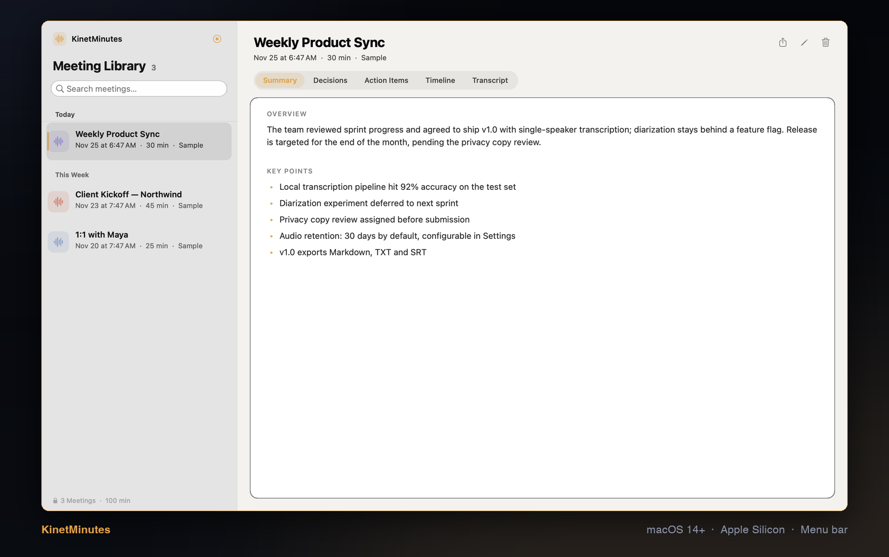
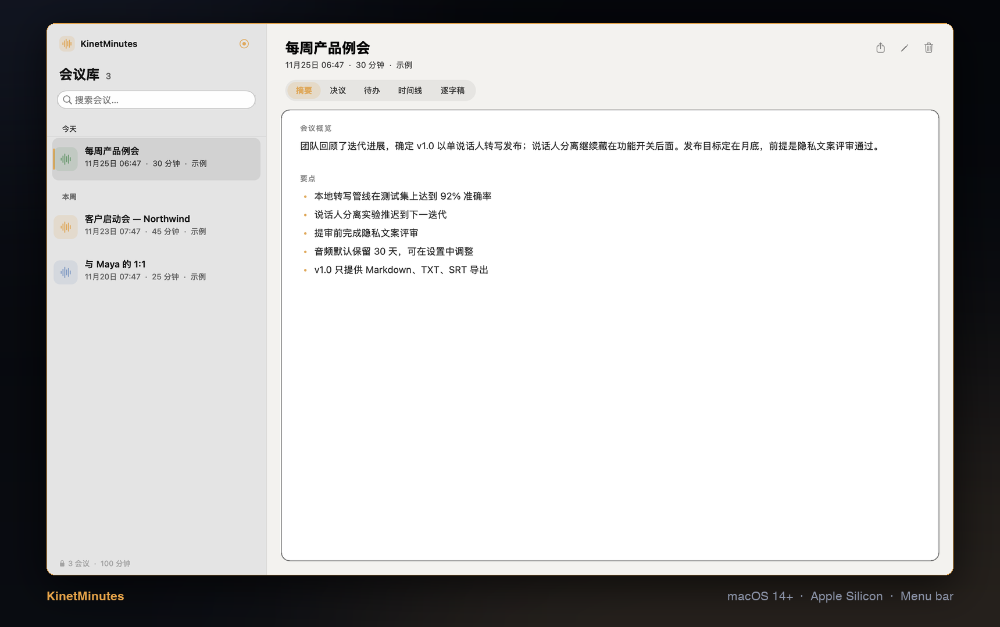
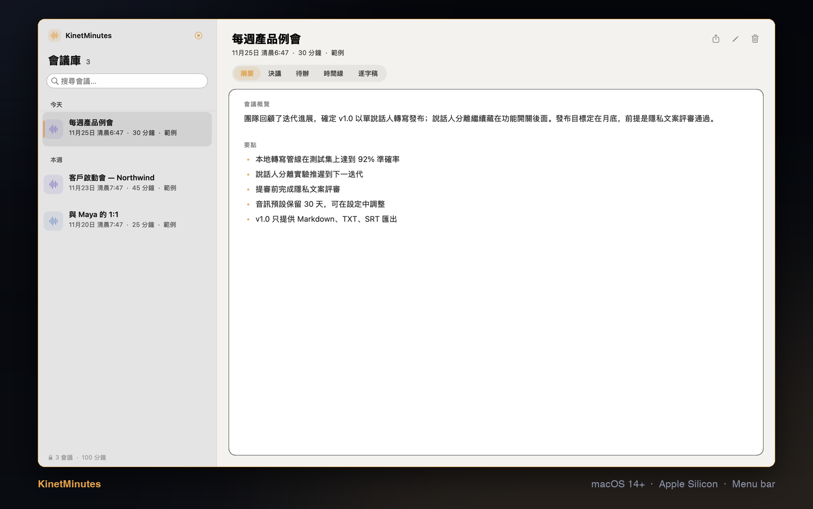
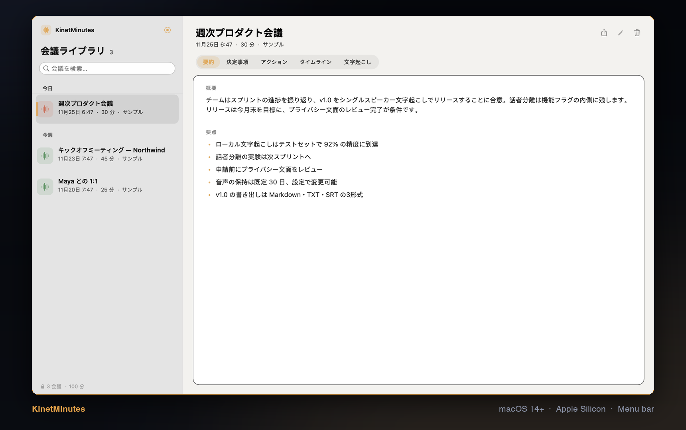
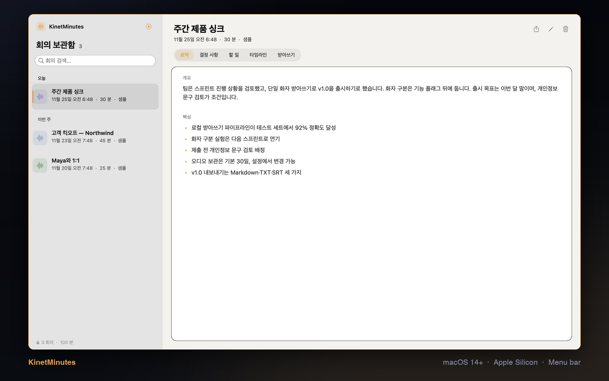
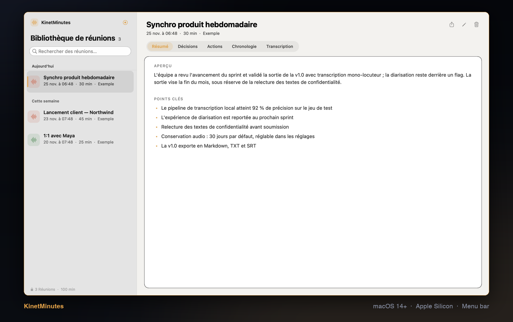
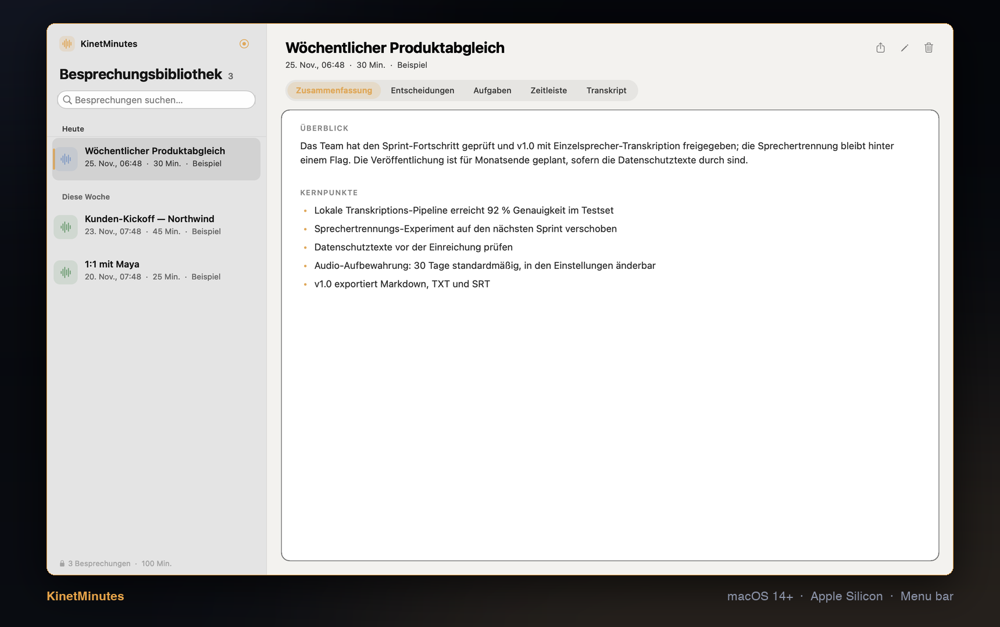
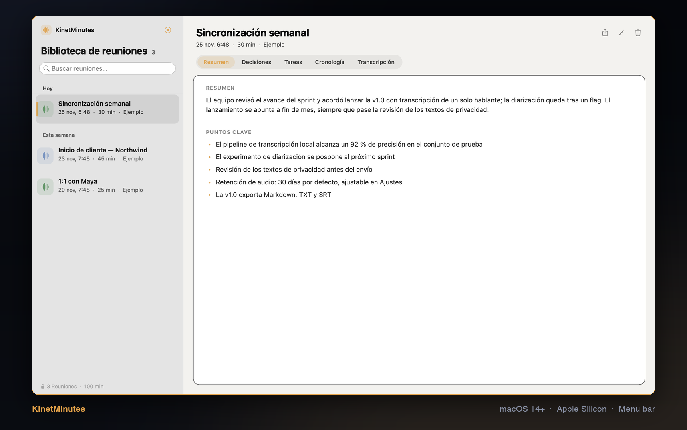

On-device Whisper transcription + local AI summarization. Works with the network off. Built for HR interviews, client negotiations, strategy meetings.
Summary, agreed decisions, action items with owners, and a timestamped timeline. Click any line to the exact moment.
Deep optimization for Mandarin + English code-switching. Works with Zoom, Tencent Meeting, Teams, Feishu, DingTalk.
Full-text search across all notes and transcripts. Export Markdown / TXT / SRT — Notion & Obsidian friendly.
KinetMinutes sits in your menu bar and detects meetings in Zoom, Teams, Tencent Meeting, Feishu, DingTalk, Discord or Webex — recording starts automatically.
Audio is transcribed on-device with Whisper. Nothing is uploaded, nothing is recorded in the cloud — it works with your network off.
When the meeting ends, local AI writes the minutes: summary, decisions, action items with owners, and a clickable timeline.
No. Transcription (Whisper) and AI summarization both run locally. KinetMinutes works with the network fully off. Your audio, transcripts and notes stay in your library — delete everything anytime.
Zoom, Tencent Meeting, Microsoft Teams, Feishu (Lark), DingTalk, Discord and Webex. Recording can also be started manually for any call.
The app includes unlimited recording and offline transcription with all four Whisper models, plus 5 AI note sets per calendar month. Pro is a one-time purchase, not a subscription: it removes the monthly note limit and adds Markdown/PDF export.
Yes — Chinese-first. Whisper models are tuned for Mandarin and mixed Chinese-English speech, a gap most global tools leave open.
Any Apple Silicon Mac running macOS 14 or later. The base model downloads once, then everything runs offline.

端侧 Whisper 转写 + 本地 AI 总结,断网可用。HR 面谈、客户谈判、战略会的放心之选。
摘要、决议、带负责人的待办、带时间戳的时间线。点击任意条目直达原声。
针对普通话 + 中英混说深度优化。支持 Zoom、腾讯会议、Teams、飞书、钉钉。
纪要+逐字稿全文搜索,导出 Markdown / TXT / SRT,兼容 Notion 与 Obsidian。
KinetMinutes 常驻菜单栏,自动检测 Zoom、腾讯会议、Teams、飞书、钉钉、Discord、Webex 会议并开始录音,无需任何手动操作。
语音由端侧 Whisper 转写,不上传、不进云端,断网也能正常工作。录音、逐字稿、纪要都留在本机,随时可整库删除。
会议结束时本地 AI 自动生成纪要:摘要、决议、带负责人的待办、可点击回跳原声的时间线。
不会。转写(Whisper)和 AI 总结全部在本机运行,断网状态可完整使用。录音、逐字稿、纪要都在你自己的会议库里,随时可整库删除。
Zoom、腾讯会议、Microsoft Teams、飞书、钉钉、Discord、Webex 自动检测;任意通话也可手动开录。
App 已含不限次录音与离线转写、四档 Whisper 模型全部可用,另有每个自然月 5 次 AI 纪要。Pro 为一次性买断(非订阅):解除每月纪要次数限制,并解锁 Markdown/PDF 导出。
中文优先是本产品的核心能力:针对普通话与中英混说深度优化,这是大多数国际工具的短板。
Apple Silicon 芯片的 Mac,macOS 14 及以上。基础模型首次下载后,之后全部离线运行。

端側 Whisper 轉寫 + 本機 AI 摘要,斷網可用。HR 面談、客戶談判、戰略會議的放心之選。
摘要、決議、帶負責人的待辦、帶時間戳的時間線。點擊任意條目直達原聲。
針對普通話 + 中英混說深度優化。支援 Zoom、騰訊會議、Teams、飛書、釘釘。
紀要+逐字稿全文搜尋,匯出 Markdown / TXT / SRT,相容 Notion 與 Obsidian。
KinetMinutes 常駐選單列,自動偵測 Zoom、Teams、騰訊會議、飛書、釘釘等會議並開始錄音。
語音由端側 Whisper 轉寫,不上傳、不進雲端,斷網也能正常運作。
會議結束時本機 AI 自動產生紀要:摘要、決議、待辦與可點擊的時間線。
不會。轉寫與 AI 摘要全部在本機執行,斷網可完整使用,資料可隨時整庫刪除。
Zoom、騰訊會議、Microsoft Teams、飛書、釘釘、Discord、Webex 自動偵測;任意通話也可手動開錄。
App 已含不限次錄音與離線轉寫、四種 Whisper 模型全部可用,另有每個月 5 次 AI 紀要。Pro 為一次性買斷(非訂閱):解除每月紀要次數限制,並解鎖 Markdown/PDF 匯出。
Apple Silicon 晶片的 Mac,macOS 14 以上。基礎模型首次下載後全部離線運作。

オンデバイス Whisper + ローカル AI。オフラインで完全動作。面談・商談に。
要約・決定事項・担当者付きアクション・タイムスタンプ付きタイムライン。
Zoom、Tencent Meeting、Teams、Lark、DingTalk。
議事録と文字起こしを全文検索。Markdown / TXT / SRT 書き出し。
メニューバーに常駐し、Zoom / Teams / Tencent Meeting などの会議を自動検知して録音開始。
音声はオフラインで文字起こし。アップロードなし、クラウドなし。
会議終了時にローカル AI が要約・決定事項・アクション・タイムラインを自動生成。
いいえ。文字起こしも AI 要約もすべてローカルで実行されます。オフラインでも完全動作し、データはいつでも一括削除できます。
Zoom、Tencent Meeting、Microsoft Teams、Lark、DingTalk、Discord、Webex を自動検知。手動での録音開始も可能です。
アプリには無制限の録音とオフライン文字起こし、4 サイズすべての Whisper モデル、月 5 回分の AI 議事録が含まれます。Pro は買い切り(サブスクなし)で、月の回数制限を解除し Markdown/PDF 書き出しを追加します。

온디바이스 Whisper + 로컬 AI. 네트워크 없이 동작합니다. 면접, 협상, 전략 회의에.
요약, 결정 사항, 담당자와 마감일이 붙은 할 일, 타임스탬프 타임라인. 한 줄만 클릭하면 그 순간으로.
Zoom, Tencent Meeting, Teams, Lark, DingTalk, Discord, Webex.
모든 노트와 받아쓰기를 검색합니다. Markdown / TXT / SRT 내보내기.
메뉴 막대에 상주하며 Zoom, Teams, Tencent Meeting 같은 회의를 자동 감지해 녹음을 시작합니다.
음성은 Whisper로 기기에서 받아쓰기됩니다. 업로드도, 클라우드도 없습니다.
회의가 끝나면 로컬 AI가 요약, 결정 사항, 담당자 붙은 할 일, 클릭 가능한 타임라인을 만듭니다.
아니요. 받아쓰기와 AI 요약이 모두 로컬에서 실행됩니다. 네트워크를 끄고도 완전히 동작하며, 데이터는 언제든 한 번에 지울 수 있습니다.
Zoom, Tencent Meeting, Microsoft Teams, Lark, DingTalk, Discord, Webex를 자동 감지합니다. 어떤 통화든 수동으로 녹음을 시작할 수도 있습니다.
앱에는 무제한 녹음과 오프라인 받아쓰기, 네 가지 Whisper 모델, 월 5회분 AI 회의록이 포함됩니다. Pro는 1회 구매(구독 아님)로 월 횟수 제한을 없애고 Markdown/PDF 내보내기를 추가합니다.
됩니다. 중국어 우선으로 설계했고, 보통화와 중영 혼용 발화에 맞춰 Whisper 모델을 튜닝했습니다.
macOS 14 이상이 설치된 Apple Silicon Mac. 기본 모델을 한 번 내려받으면 이후에는 전부 오프라인으로 동작합니다.

Whisper sur l'appareil + IA locale. Fonctionne sans réseau. Pensé pour les entretiens, les négociations et les comités de stratégie.
Résumé, décisions actées, actions avec responsables et échéances, chronologie horodatée. Un clic sur une ligne et vous y êtes.
Zoom, Tencent Meeting, Teams, Lark, DingTalk, Discord, Webex.
Dans toutes les notes et transcriptions. Export Markdown / TXT / SRT, compatible Notion et Obsidian.
KinetMinutes vit dans la barre des menus et détecte les réunions Zoom, Teams, Tencent Meeting, Lark, DingTalk, Discord ou Webex — l'enregistrement démarre seul.
L'audio est transcrit sur l'appareil par Whisper. Rien n'est envoyé, rien n'est stocké dans le cloud : ça marche réseau coupé.
À la fin, l'IA locale rédige le compte rendu : résumé, décisions, actions avec responsables et une chronologie cliquable.
Non. La transcription (Whisper) et le résumé par IA tournent en local. KinetMinutes fonctionne réseau entièrement coupé, et tout se supprime d'un geste.
Zoom, Tencent Meeting, Microsoft Teams, Lark (Feishu), DingTalk, Discord et Webex. L'enregistrement peut aussi être lancé à la main pour n'importe quel appel.
L'app inclut l'enregistrement et la transcription hors ligne illimités, les quatre tailles de Whisper, et 5 jeux de notes IA par mois. Pro est un achat unique, pas un abonnement : il retire la limite mensuelle et ajoute l'export Markdown/PDF.
Oui, c'est notre point fort : les modèles Whisper sont réglés pour le mandarin et l'alternance chinois-anglais, là où la plupart des outils internationaux décrochent.
Un Mac Apple Silicon sous macOS 14 ou plus. Le modèle de base se télécharge une fois, puis tout tourne hors ligne.

Whisper auf dem Gerät + lokale KI. Läuft ohne Netz. Für Interviews, Verhandlungen und Strategierunden.
Zusammenfassung, getroffene Entscheidungen, Aufgaben mit Verantwortlichen und Fristen, Zeitachse mit Zeitstempeln. Ein Klick springt zur Stelle.
Zoom, Tencent Meeting, Teams, Lark, DingTalk, Discord, Webex.
Über alle Notizen und Transkripte. Export als Markdown / TXT / SRT, passend für Notion und Obsidian.
KinetMinutes sitzt in der Menüleiste, erkennt Zoom, Teams, Tencent Meeting, Lark, DingTalk, Discord oder Webex — und nimmt automatisch auf.
Audio wird auf dem Gerät mit Whisper transkribiert. Kein Upload, keine Cloud — funktioniert mit abgeschaltetem Netz.
Zum Schluss schreibt die lokale KI das Protokoll: Zusammenfassung, Entscheidungen, Aufgaben mit Verantwortlichen und eine klickbare Zeitachse.
Nein. Transkription (Whisper) und KI-Zusammenfassung laufen lokal. KinetMinutes funktioniert ohne Netz, und du kannst jederzeit alles löschen.
Zoom, Tencent Meeting, Microsoft Teams, Lark (Feishu), DingTalk, Discord und Webex. Jeder Anruf lässt sich auch manuell aufnehmen.
Die App enthält unbegrenztes Aufnehmen und Offline-Transkribieren, alle vier Whisper-Modelle und 5 KI-Notizen pro Monat. Pro ist ein Einmalkauf, kein Abo: es hebt das Monatslimit auf und ergänzt Markdown/PDF-Export.
Ja, genau dafür ist die App gebaut: die Whisper-Modelle sind auf Mandarin und chinesisch-englisches Code-Switching abgestimmt.
Einen Apple-Silicon-Mac mit macOS 14 oder neuer. Das Basismodell wird einmal geladen, danach läuft alles offline.

Whisper en el dispositivo + IA local. Funciona sin red. Para entrevistas, negociaciones y reuniones de estrategia.
Resumen, decisiones acordadas, tareas con responsables y fechas, cronología con marcas de tiempo. Un clic y estás en ese punto.
Zoom, Tencent Meeting, Teams, Lark, DingTalk, Discord y Webex.
En todas las notas y transcripciones. Exportación Markdown / TXT / SRT, compatible con Notion y Obsidian.
KinetMinutes vive en la barra de menús y detecta reuniones de Zoom, Teams, Tencent Meeting, Lark, DingTalk, Discord o Webex: la grabación empieza sola.
El audio se transcribe con Whisper en el dispositivo. Nada se sube, nada va a la nube: funciona con la red apagada.
Al terminar, la IA local redacta el acta: resumen, decisiones, tareas con responsables y una cronología en la que puedes hacer clic.
No. La transcripción (Whisper) y el resumen con IA se ejecutan en local. KinetMinutes funciona con la red apagada y puedes borrarlo todo cuando quieras.
Zoom, Tencent Meeting, Microsoft Teams, Lark (Feishu), DingTalk, Discord y Webex. También puedes iniciar la grabación a mano en cualquier llamada.
La app incluye grabación y transcripción sin conexión ilimitadas, los cuatro modelos Whisper y 5 juegos de notas con IA al mes. Pro es una compra única, no una suscripción: quita el límite mensual y añade exportación Markdown/PDF.
Sí, es su punto fuerte: los modelos Whisper están ajustados para mandarín y para alternar chino e inglés, justo donde fallan las herramientas internacionales.
Un Mac con Apple Silicon y macOS 14 o posterior. El modelo base se descarga una vez y después todo funciona sin conexión.